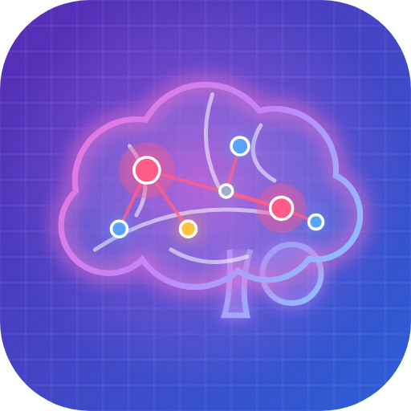

Second brain
Ti porto al tuo second brain…
Apri il second brain- Tocca i tre puntini ⋮ di Chrome in alto a destra.
- Scegli Aggiungi a schermata Home (o Installa app).
- Conferma: sulla Home compare questa icona.

Ti porto al tuo second brain…
Apri il second brain